Bag of tRicks: ggplot2
Susi Zajitschek
2025-04-05
Download
Click here:
Download and save file, and open in R Studio (doesn’t matter if it shows file extension html or rmd, if will be executable as markdown)
R basic plots
data(iris)
str(iris)## 'data.frame': 150 obs. of 5 variables:
## $ Sepal.Length: num 5.1 4.9 4.7 4.6 5 5.4 4.6 5 4.4 4.9 ...
## $ Sepal.Width : num 3.5 3 3.2 3.1 3.6 3.9 3.4 3.4 2.9 3.1 ...
## $ Petal.Length: num 1.4 1.4 1.3 1.5 1.4 1.7 1.4 1.5 1.4 1.5 ...
## $ Petal.Width : num 0.2 0.2 0.2 0.2 0.2 0.4 0.3 0.2 0.2 0.1 ...
## $ Species : Factor w/ 3 levels "setosa","versicolor",..: 1 1 1 1 1 1 1 1 1 1 ...Histogram (one continuous variable)
hist(iris$Sepal.Length)
Two continuous (scatterplot)
plot(y ~ x, data = df)
plot(Petal.Length ~ Sepal.Length, data = iris)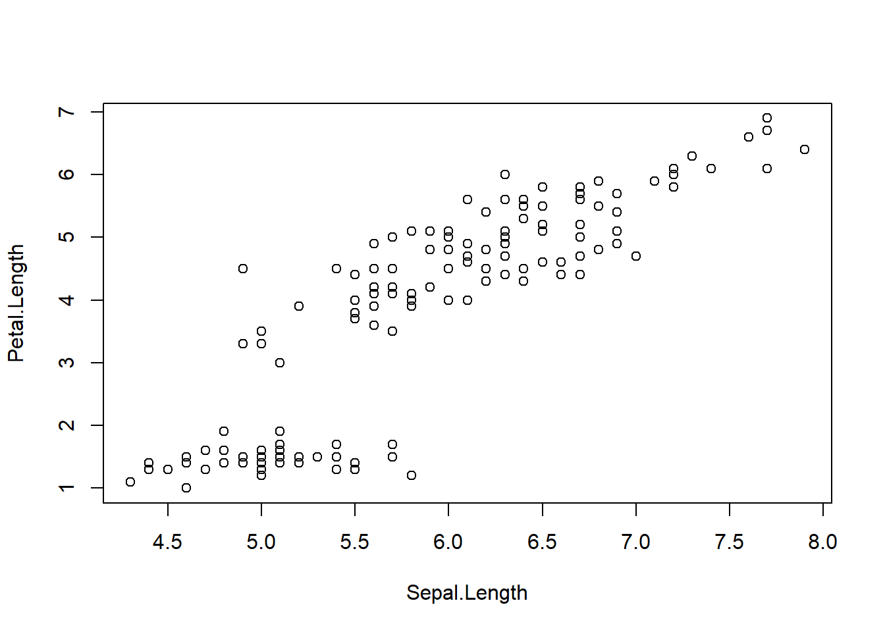
Modifications
plot(y ~ x, data = df, xlab = “X axis name (unit)”, ylab = “Y axis name(unit)”, main = “Figure title“, ylim = c(0, 80))
plot(Petal.Length ~ Sepal.Length, data = iris, xlab = "Sepal Length (cm)", ylab = "Petal Length (cm)", main = "Iris Flower measurements", ylim = c(0, 10))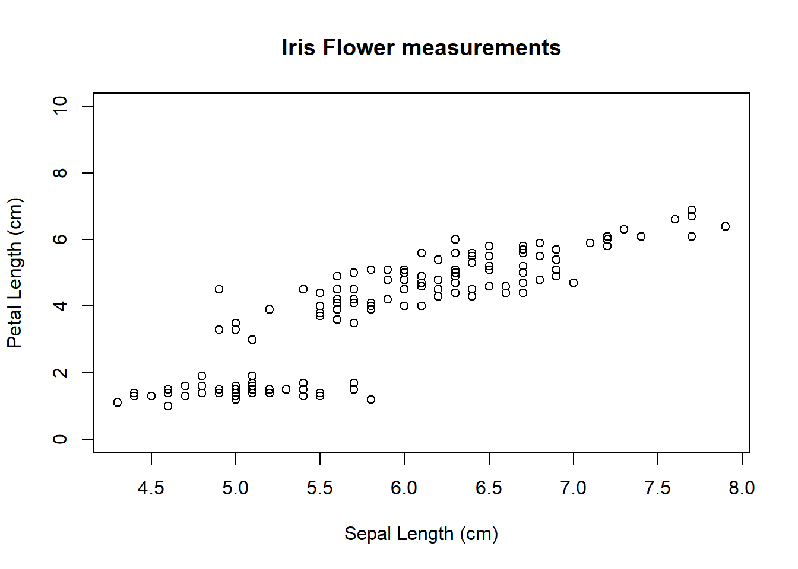
GGPLOT 2
library(ggplot2)ggplot(iris, aes(Sepal.Length, Petal.Length)) +
geom_point() +
labs(y = "Petal length (cm)", x = "Sepal length (cm)")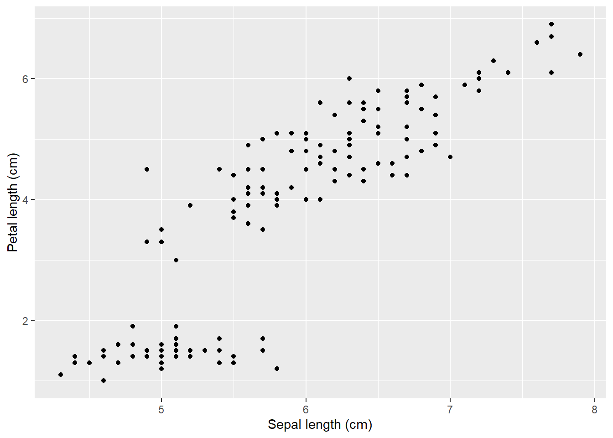 So That’s basically the same as the base R plot
Reminder: Titles and Axes Labels
Adding a title
Add the code +ggtitle("Your Title Here") Don’t forget
quotation marks at the start and end!
Changing axis labels
To alter the labels on the axis, add the code
+labs(y= "y axis name", x = "x axis name") to your line of
basic ggplot code.
ggplot(iris, aes(Sepal.Length, Petal.Length)) +
geom_point() +
labs(y = "Petal length (cm)", x = "Sepal length (cm)") +
ggtitle("Petal and sepal length of iris")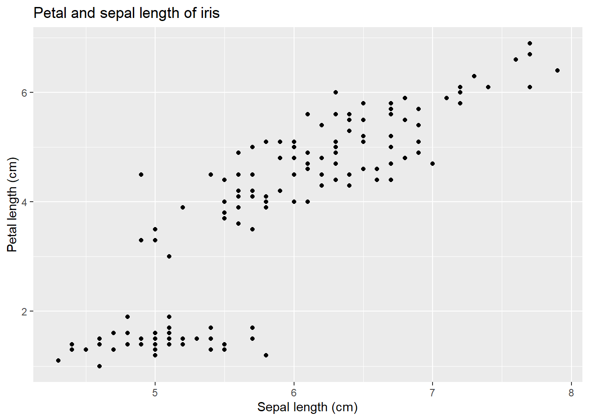
Let’s modify, add colours by factor:
ggplot(iris, aes(Sepal.Length, Petal.Length, colour = Species)) +
geom_point() +
labs(y = "Petal length (cm)", x = "Sepal length (cm)")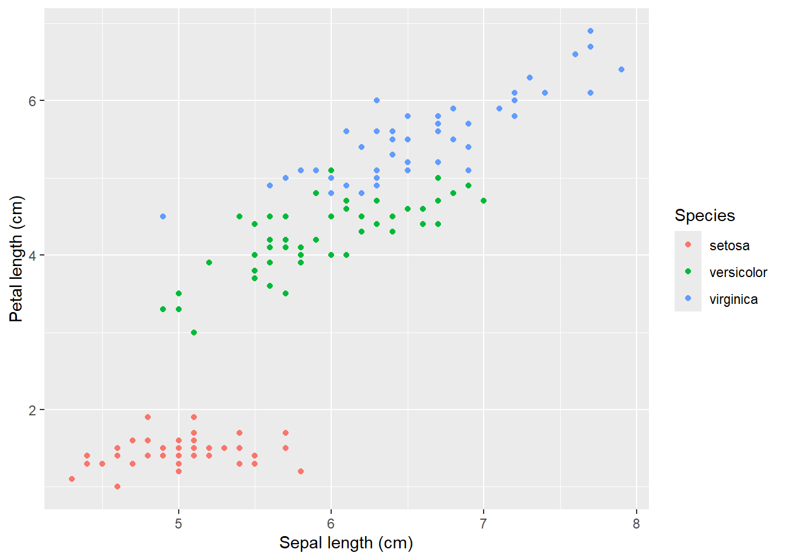
Themes
Modify how your plot looks
ggplot(iris, aes(Sepal.Length, Petal.Length, colour = Species)) +
geom_point() +
theme_bw() +
labs(y = "Petal length (cm)", x = "Sepal length (cm)")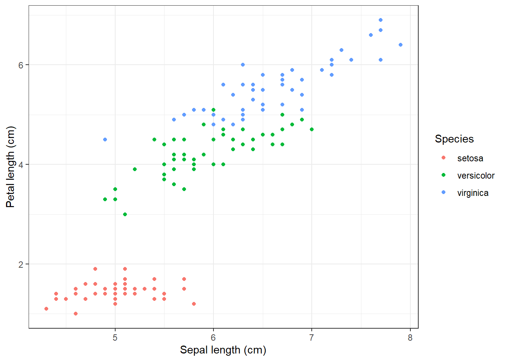
Play around, for example with
theme_light, theme_dark, theme_minimal, theme_classic
ggplot(iris, aes(Sepal.Length, Petal.Length, colour = Species)) +
geom_point() +
theme_classic() +
labs(y = "Petal length (cm)", x = "Sepal length (cm)")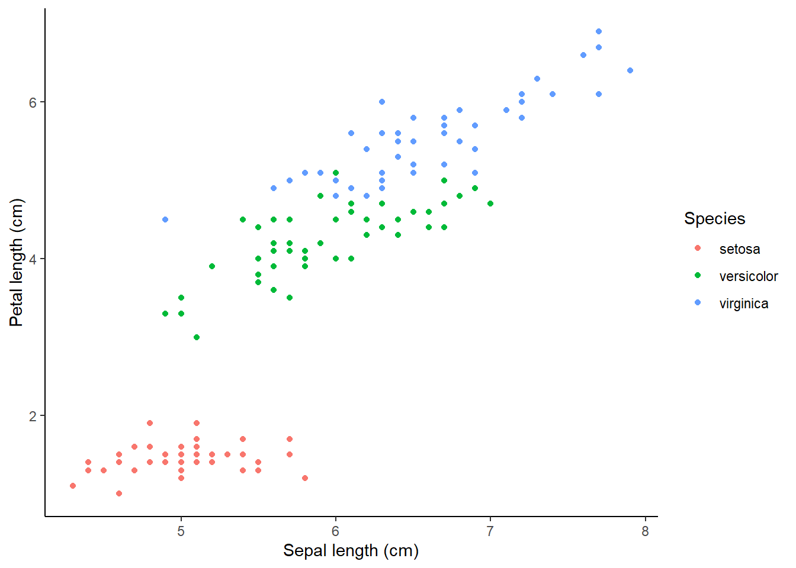
ggplot2 is very customisable, you can remove parts from themes, or write your own theme (not fully covered here)
ggplot(iris, aes(Sepal.Length, Petal.Length, colour = Species)) +
geom_point() +
theme(axis.ticks = element_blank()) +
labs(y = "Petal length (cm)", x = "Sepal length (cm)")ggplot(iris, aes(Sepal.Length, Petal.Length, colour = Species)) +
geom_point() +
theme(panel.background = element_blank()) +
labs(y = "Petal length (cm)", x = "Sepal length (cm)")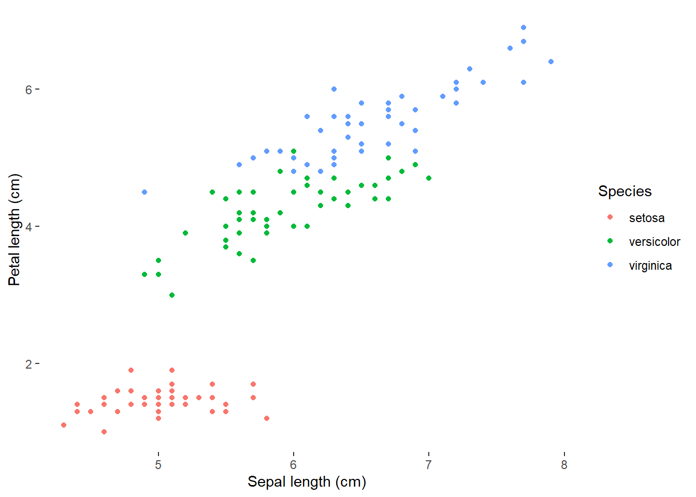
or change the font (size etc), location of you legend:
ggplot(iris, aes(Sepal.Length, Petal.Length, colour = Species)) +
geom_point() +
theme(panel.background = element_blank()) +
theme(legend.position = "bottom", legend.text = element_text(size = 14),
legend.title = element_text(size = 18, face = "bold" ), axis.title= element_text(size = 20))+
labs(y = "Petal length (cm)", x = "Sepal length (cm)") 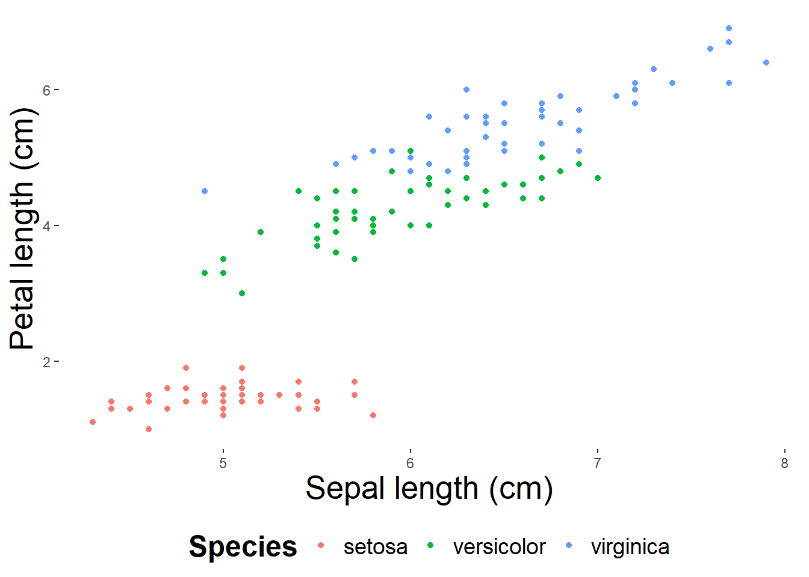
Instead of COLOUR, change the shape (and/or size of your “points”)
ggplot(iris, aes(Sepal.Length, Petal.Length, shape = Species)) +
geom_point(size = 2.5, alpha = 0.6) +
theme(panel.background = element_blank()) +
theme(legend.position = "bottom", legend.text = element_text(size = 14),
legend.title = element_text(size = 18, face = "bold" ), axis.title= element_text(size = 20))+
labs(y = "Petal length (cm)", x = "Sepal length (cm)") 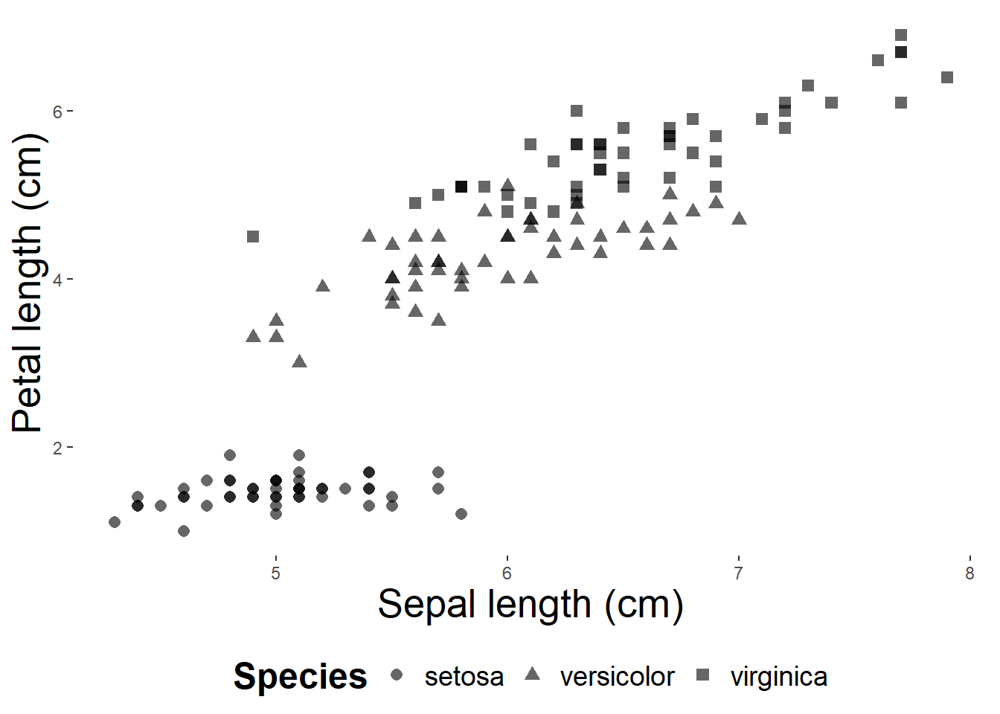
Or customise your colours:
ggplot(iris, aes(Petal.Length, Sepal.Length)) +
geom_point(color="red") 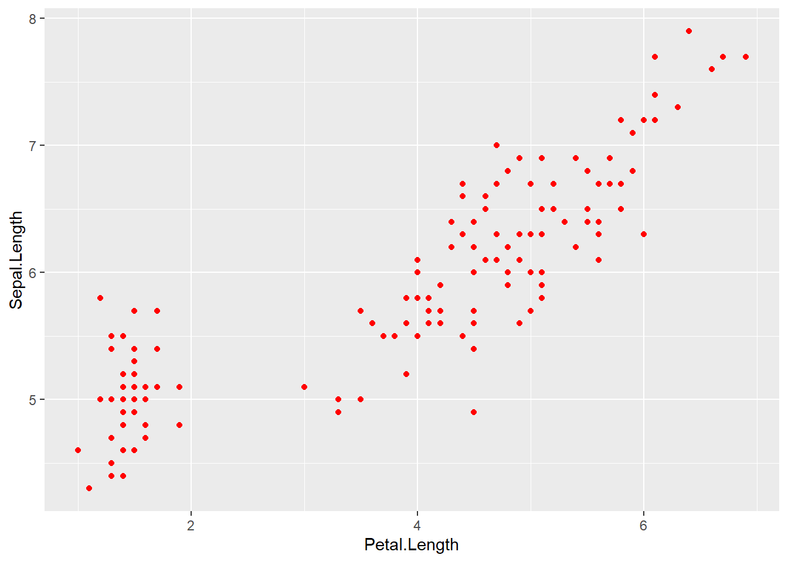
If gradients are useful -e.g. a third variable is added into the picture (don’t forget to specify which variable defines the gradient!)
ggplot(iris, aes(Petal.Length, Sepal.Length, colour = Sepal.Width)) +
geom_point() + scale_colour_gradient(low = "black", high = "white")+
theme_classic()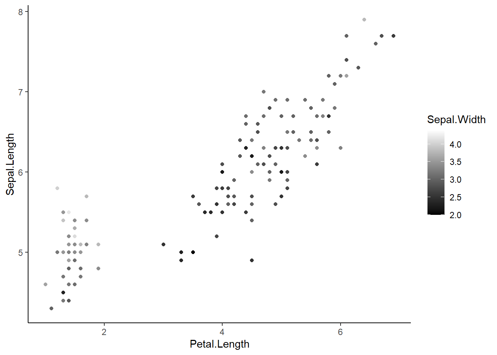
ggplot(iris, aes(Petal.Length, Sepal.Length, colour = Sepal.Width)) +
geom_point() + scale_colour_gradient(low = "pink", high = "blue")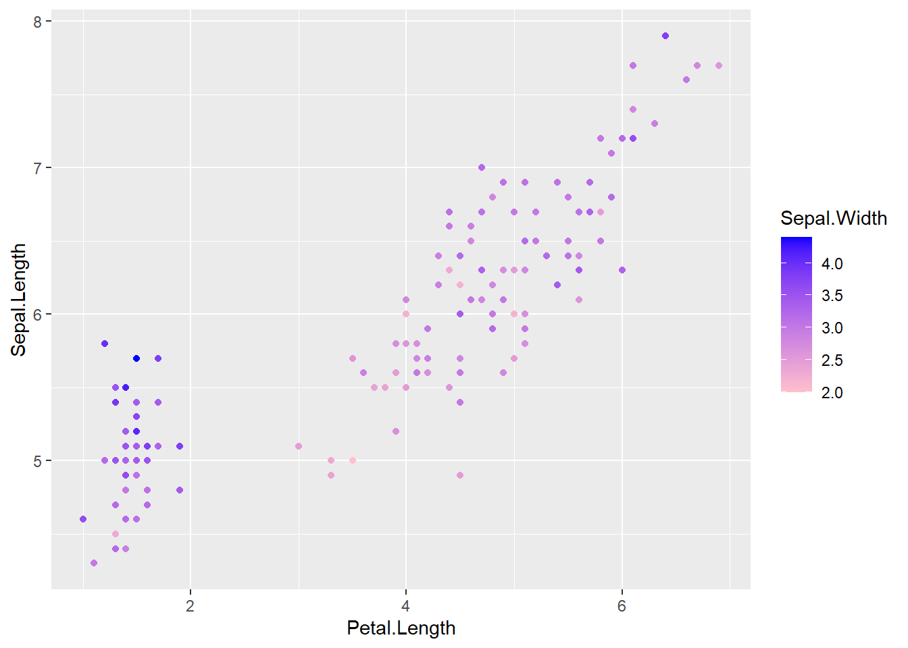
Additional useful functions
adding trendlines:
irispoint <- ggplot(data = iris, aes(x = Petal.Width, y = Petal.Length)) +
geom_point(aes(colour = Species), size = 5, alpha = 0.3) +
geom_line(stat="smooth", method = "lm", alpha = 0.3) +
geom_line(aes(group = Species, colour = Species), stat="smooth", method =
"lm", lwd = 0.5) +
theme_bw()
irispoint## `geom_smooth()` using formula = 'y ~ x'
## `geom_smooth()` using formula = 'y ~ x'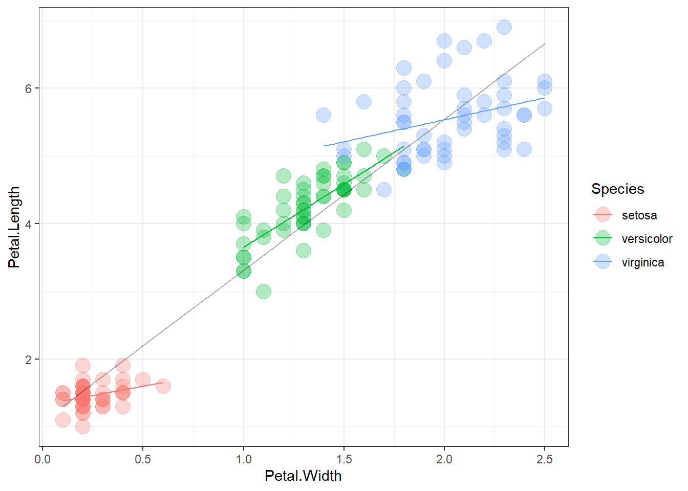
Splitting by factors:
facet_wrap()
ggplot(data = iris, aes(x = Sepal.Length, y = Sepal.Width, colour = Species)) +
geom_point( size = 5, alpha = 0.3) +
geom_line(stat="smooth", method = "lm", alpha = 2) +
facet_wrap("Species")+
theme_bw()## `geom_smooth()` using formula = 'y ~ x'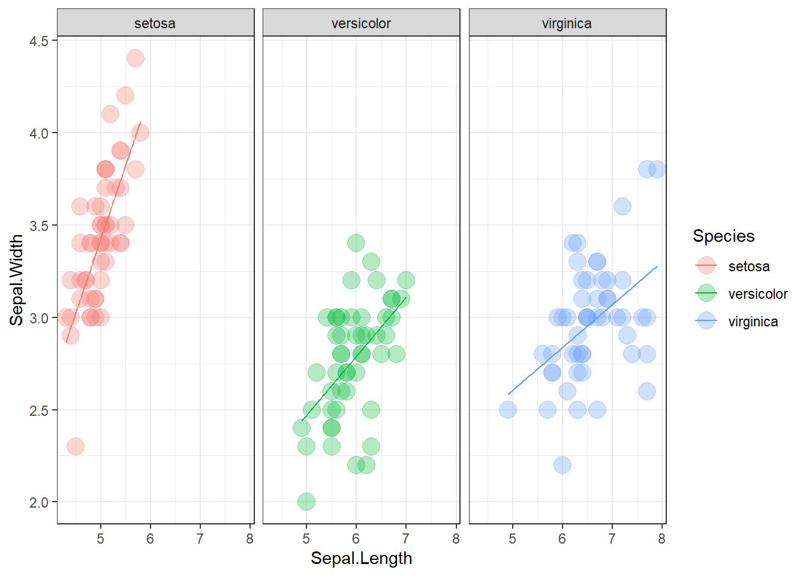
BOXPLOTS
ggplot(iris, aes(x = Species, y = Petal.Length)) +
geom_boxplot() +
theme_bw()
Visualising the spread of your data: VIOLINPLOTS particularly useful together with JITTER (rather than geom_point)
ggplot(data = iris, aes(x = Species, y = Petal.Length)) +
geom_violin(trim = F) +
geom_jitter(col = "purple", size = 2, alpha = 0.2) +
stat_summary(fun.data = "mean_se", col = "green") +
theme_bw()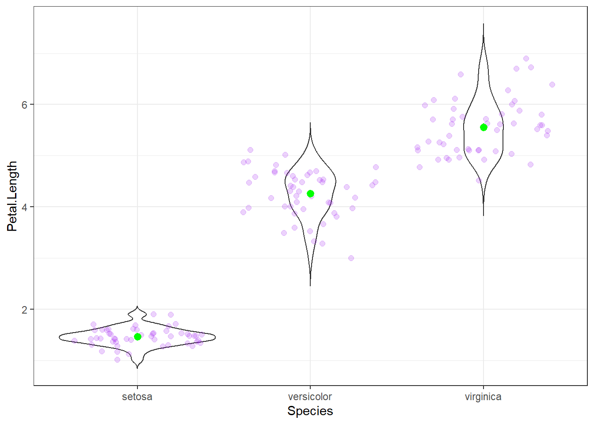
If you want to add info on your median: add a boxplot
ggplot(data = iris, aes(x = Species, y = Petal.Length)) +
geom_violin(trim = F) +
geom_boxplot() +
geom_jitter(col = "purple", size = 2, alpha = 0.2) +
stat_summary(fun.data = "mean_se", col = "green") +
theme_bw() 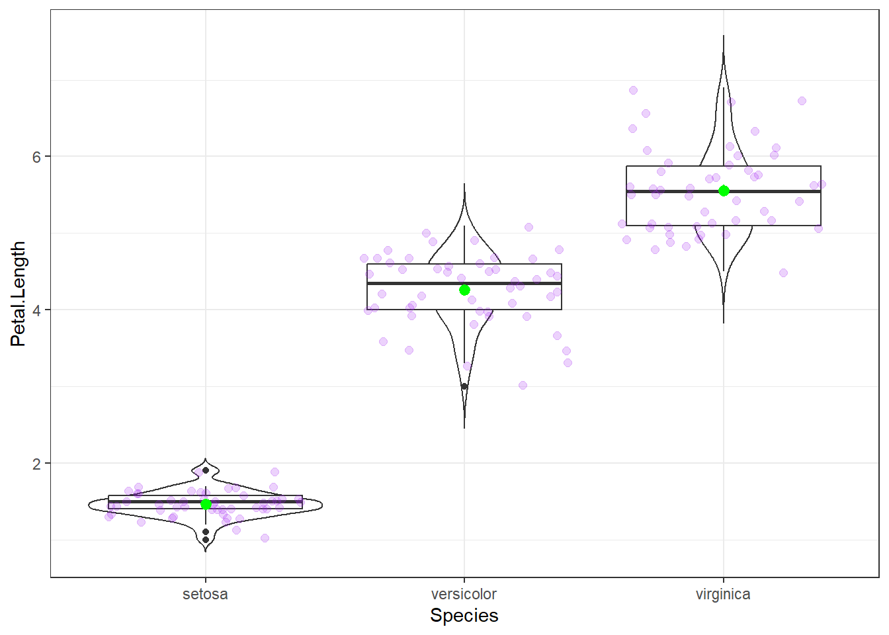
Assign colours from a pre-made pallette
using + scale_colour_brewer() or
+ scale_fill_brewer. Install the package RColorBrewer
and load in R.
here’s what there is: https://r-graph-gallery.com/38-rcolorbrewers-palettes.html
library(RColorBrewer)I saved one of the scatterplots above as “irispoint”, so instead of re-running the full block of code I can now modify the existing object:
print(irispoint + scale_colour_brewer(palette = "Dark2"))## `geom_smooth()` using formula = 'y ~ x'
## `geom_smooth()` using formula = 'y ~ x'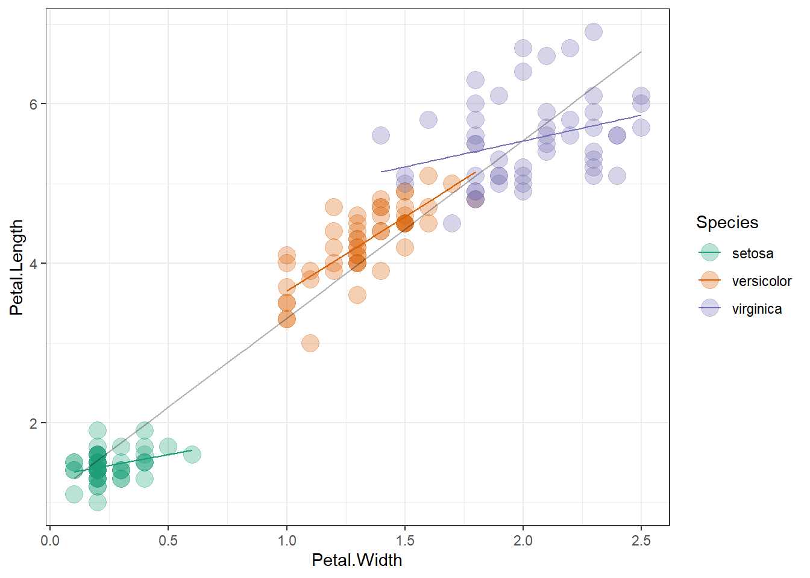
print(irispoint + scale_colour_brewer(palette = "RdPu"))## `geom_smooth()` using formula = 'y ~ x'
## `geom_smooth()` using formula = 'y ~ x'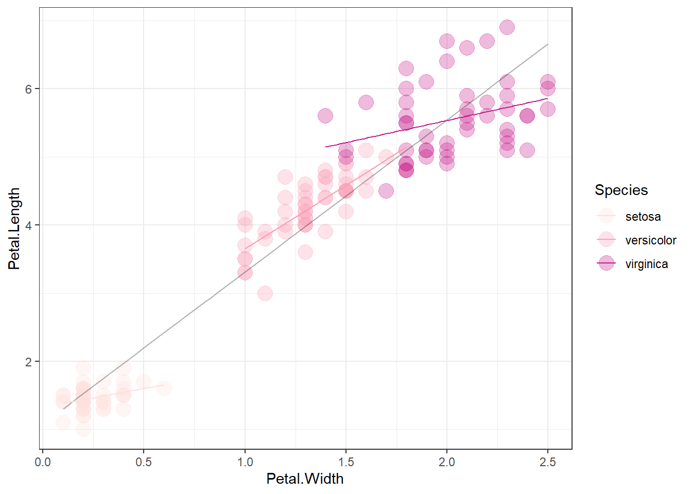
Help on all the ggplot functions can be found at the The master ggplot help site.